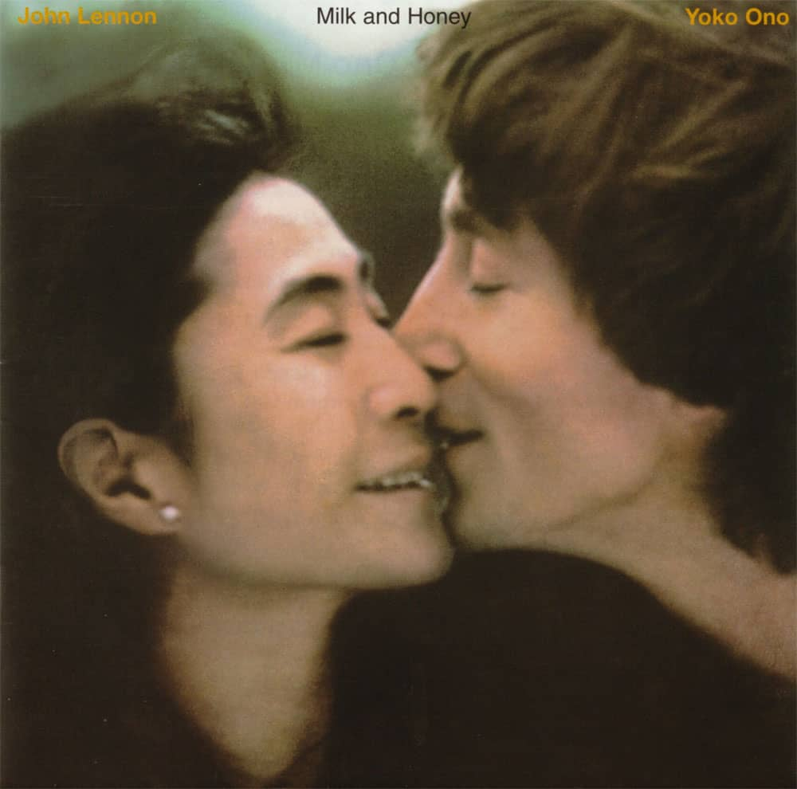

Instructor: Gloria Dela Cruz
Task 1_2_3
Music name: Forgive Me My Little Flower Princess
Singer: Johan Lennon
Released: 23 January 1984 (UK), 19 January 1984 (US)
Refrence: Spotify
Steve Jobs at MIT 1992
This video is steve jobs at MIT 1992
Student asks Steve Jobs "What's the most important thing that you learned at Apple that you're doing at NeXT ?"
Jobs says "Good Question" and pauses for a bit. "I now take a longer term view on people"
Refrence: Youtube Video
By Zig Dulay (Webm video)
Google Map of Adamson